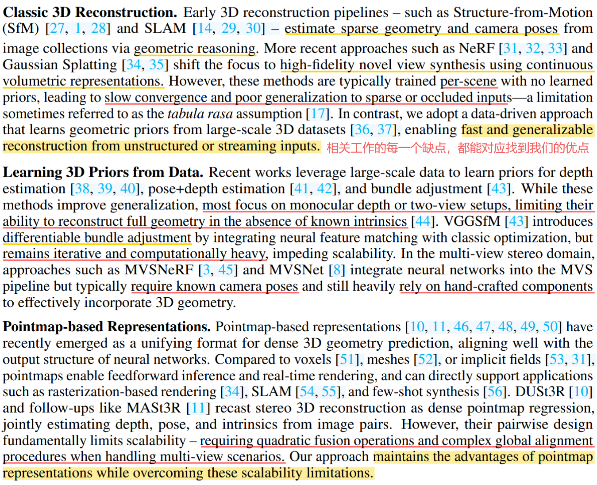
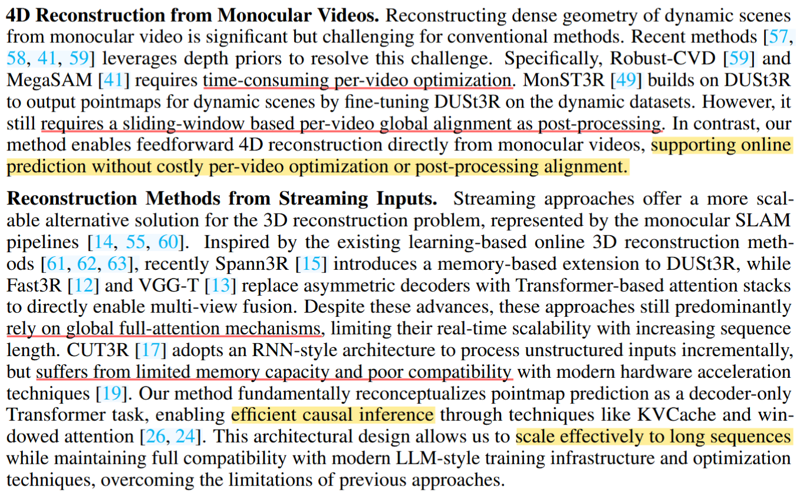
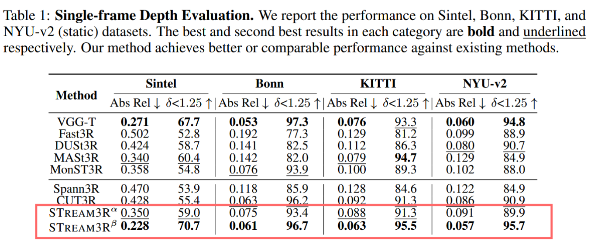
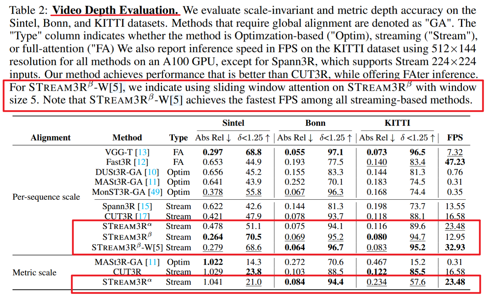
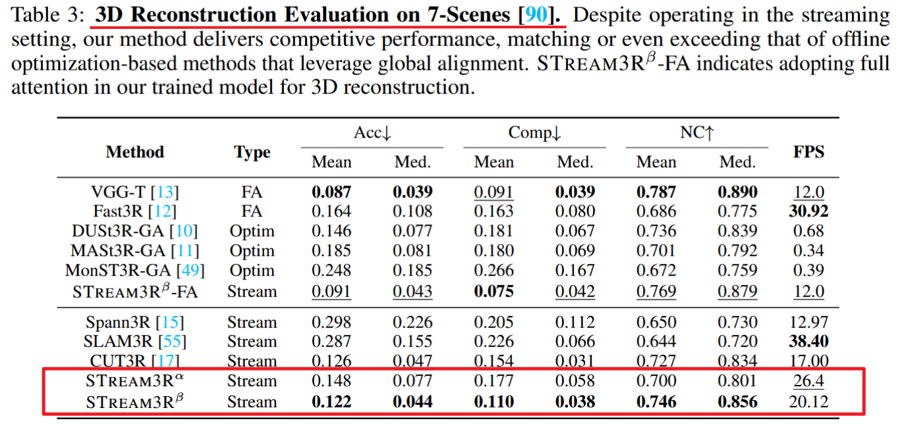

| 作者: Yushi Lan; Yihang Luo; Fangzhou Hong; Shangchen Zhou; Honghua Chen; Zhaoyang Lyu; Shuai Yang; Bo Dai; Chen Change Loy; Xingang Pan; |
| 期刊: arXiv.2508.10893（发表日期: 2025-08-14） |
| 本地链接: Lan 等 - 2025 - STream3R Scalable Sequential 3D Reconstruction with Causal Transformer.pdf |
| DOI: 10.48550/arXiv.2508.10893 |
Pipeline
📜 中文摘要
摘要: 本文提出STREAM3R，一种将点云预测重新表述为“decoder-only Transformer”的三维重建方法。当前多视图重建的Sota方法要么依赖昂贵的全局优化，要么依赖简化的记忆机制，后者在序列长度增加时扩展性较差。受LLM启发，STREAM3R提出一种流式框架，利用 causal attention 高效处理图像序列。通过从大规模3D数据集中学习几何先验，STREAM3R在多样且具有挑战性的场景（包括传统方法常失效的动态场景）中展现出良好的泛化能力。大量实验表明，本方法在静/动态场景基准上均优于先前工作。而且STREAM3R天然兼容LLM风格的训练基础设施，支持高效的大规模预训练与针对各类下游3D任务的微调。本文结果凸显了 causal Transformer models 在在线3D感知中的潜力，为流式环境中的实时3D理解铺平了道路。
(1) 研究对象
图像序列
(2) 研究问题
在线三维重建
(3) 研究方法
causal attention
(4) 实验结果
静/动态都sota，天然兼容LLM训练的基础设施，支持下游任务微调。
📊 论文结构
🙋♀️ INTRODUCTION
SfM 和 MVS 都是解决一系列的子任务；DUSt3R 以及后续的MASt3R、Fast3R、VGGT等通过Transformer实现前馈式重建。但是都处理的是一组固定的图像（每当新图像到达时直接运行的 Fast3R 或 VGGT 必须从零开始重建，无法继承之前的结果，冗余计算，而且长序列情况下他们的全局注意力很耗费计算资源），所以需要在线处理图像序列的一种更优的方法。
Spann3R 在 DUSt3R 基础上引入内存设计支持增量重建，但仍有明显的累积漂移，而且在动态场景中表现不好；CUT3R 提出RNN范式处理非结构化或流式输入，但基于 RNN 的设计由于有限的内存容量，在处理长距离依赖时存在困难。
本文利用具有单向causal attention 的 Transformer，遵从 decoder-only 的设计，来预测非结构或流式输入的点云（local & world）。与LLM模型一样，先前处理的tokens会保存且作为新输入帧的参考。
Contributions：
- decoder only Transformer for sequential registration tasks with causal attention;
- compatible with LLM-style training and inference techniques;
- generalizes to large-scale NVS;
- strong generalization and fast inference speed.
📌 RELATE WORK


🧩 METHOD
输入可以是无序的图像集合或视频。问题定义：fθ ((It)N) = (X̂tlocal, X̂tglobal, P̂t)tN.
输入图像 → shared-weight ViT encoder → Decoder (frame-wise self attention → causal cross attention) $\to $ prediction heads （2 DPT heads）
初始化的前两帧是使用DUSt3R的方法做得，因为没有上下文，先初始一下。
之前的方法（Fast3R、VGGT）都是 **Bi-directional Attention **，必须一次性看到所有的帧，根据其他所有帧的信息来调节自己重建。**Causal Attention **的原理如下：
他是一种单向注意力机制，在处理当前帧 t 时，模型只能关注它之前的帧（0, 1, ..., t − 1）以及它自己，而不能看到未来的帧。当前帧的特征 Gt 计算如下：
Gti = DecoderBlocki(Gti − 1,G0i − 1⊕G1i − 1⊕⋅⋅⋅⊕Gt − 1i − 1)
KV cache 的原理：由于 causal attention 是单向注意力，所以对于当前帧来讲，我只需要上一帧的decoder的memory cache （也就是 K, V）即可。所以只需要把上一帧计算得到的K, V存下来，在当前帧进来的时候，使用现在的 Q 来查询上一帧的 K, V ，再加上自己的 K, V就能作为现在的输出。然后把现在得到的 K, V 存下来供下一帧使用。
首帧reg：为了能让全局坐标系以第一帧为参考，本文只给第一帧的输入加了一个可学习的 [reg] 向量，相当于一个隐形戳。这样 decoder 的self-attention 和 cross attention 就会发现第一帧的这个小差异，然后只要模型看到这个差异，就将这一帧作为坐标变换的原点。
⚙️ EXPERIMENTS
计算资源：8*A100 / 7 days
给了两个版本的实现，分别针对DUSt3R和VGGT进行调整。
版本一：DUSt3R版，使用croco作为encoder，只保留第一个decoder，使用它去查看历史帧的特征；
版本二：VGGT版，把global attention中的self attention 换成 causal attention 并且微调所有参数。而且对每一层都使用了 QK-Norm，借助Flashattention 进行BFloat16混合精度训练。
BFloat16牺牲一点精度但是显存占用减半；QK-Norm把attention分数控制在一个稳定的范围里，降低了BFloat16的潜在不稳定性；Flashattention 利用 BFloat16 的计算优势，通过底层优化让模型能处理更长的视频序列



💡 CONCLUSION
Stream3R：decoder-only Transformer for 3R from unstructured or streaming image inputs with causal attention.
局限:
- error accumulation and drifting;（是否可以引入回溯修正）
- 虽然用了 Flashattention，但 cache 还是很大。（DeepSeek-V2 的 Multi-Head Latent Attention 更高效压缩KV）
📌 创新 & 疑问
创新：
使用causal attention 与 KV cache 来把之前模型的固定图像集合的三维重建转化为在线的图像流重建（decoder-only Transformer），并通过Flashattention减少存储占用，使其能适配更长序列重建。
🤔 思考
- error accumulation and drifting;（是否可以引入回溯修正）
- 虽然用了 Flashattention，但 cache 还是很大。（DeepSeek-V2 的 Multi-Head Latent Attention 更高效压缩KV）